0010T12 engine oil and filter replace
- Path
- Procedures > 00 MAINTENANCE > 0010 NEW VEHICLES AND MAINTENANCE > 0010T VEHICLE FLUIDS > 0010T12 engine oil and filter replace
- Kind
- repair procedure (removal / refitting; the operation number is the code)
- Applies to
- all engines; all production periods
- Interactive page
- https://sloeber94.github.io/elrnDB-fDbl/en/#/2584121
Applies to: engines: 1.2 8v, 1.6 16v, 1.3 JTD 16V, 1.9 JTD 8V, 1.9 DIESEL; all production periods
Applies to: engines: 1.2 8v, 1.6 16v, 1.9 DIESEL; all production periods
Position the vehicle on a lift.
Remove the filler cap
Withdraw the dipstick.
Raise the vehicle.
Applies to: engines: 1.6 16v; all production periods
Applies to: engines: 1.2 8v, 1.6 16v, 1.9 DIESEL; all production periods
Position a suitable container under the vehicle by the drain plug.
Undo the drain plug in the crankcase sump and leave the oil to drain into the container.
Undo the oil filter and remove it.
Clean the drain plug and tighten it to the recommended torque.
Fastening | Component | dia | Value (daNm) | |
|---|---|---|---|---|
- | Plug | ENGINE OIL DRAIN PLUG | M18 x 1.5 | 2 |
Applies to: engines: 1.6 16v; all production periods
Clean the drain plug and tighten it to the recommended torque.
Fastening | Component | dia | Value (daNm) | |
|---|---|---|---|---|
- | Plug | ENGINE OIL DRAIN PLUG | M22 | 5 |
Applies to: engines: 1.2 8v, 1.6 16v, 1.9 DIESEL; all production periods
Lubricate the new oil filter seal with engine oil and tighten it fully.
Applies to: engines: 1.6 16v; all production periods
Applies to: engines: 1.2 8v, 1.6 16v, 1.9 DIESEL; all production periods
Lower the vehicle.
Applies to: engines: 1.2 8v; all production periods
Refill the lubrication circuit with the recommended oil.
Type | Component | Description | Qty. | |
|---|---|---|---|---|
- | Oil [l] | ENGINE LUBRICATION SYSTEM | SELENIA 20K | 2.8 |
For the optimum operation of the engine in particularly harsh climate conditions (temperatures below -20C) use the recommended oil for the engine lubrication circuit.
Type | Component | Description | Qty. | |
|---|---|---|---|---|
- | Oil | ENGINE LUBRICATION SYSTEM | SELENIA PERFORMER | 2.8 |
Applies to: engines: 1.6 16v; all production periods
Refill the lubrication circuit with the recommended oil.
Type | Component | Description | Qty. | |
|---|---|---|---|---|
- | Oil [l] | ENGINE LUBRICATION SYSTEM | SELENIA 20K | 3.9 |
For the optimum operation of the engine in particularly harsh climate conditions (temperatures below -20C) use the recommended oil for the engine lubrication circuit.
Type | Component | Description | Qty. | |
|---|---|---|---|---|
- | Oil [l] | ENGINE LUBRICATION SYSTEM | SELENIA PERFORMER | 3.9 |
Applies to: engines: 1.9 DIESEL; all production periods
Refill the lubrication circuit with the recommended oil.
Type | Component | Description | Qty. | |
|---|---|---|---|---|
- | Oil [l] | ENGINE LUBRICATION SYSTEM | SELENIA TURBODIESEL | 4.3 |
For the optimum operation of the engine in particularly harsh climate conditions (temperatures below -15C) use the recommended oil for the engine lubrication circuit.
Type | Component | Description | Qty. | |
|---|---|---|---|---|
- | Oil | ENGINE LUBRICATION SYSTEM | SELENIA WR DIESEL | 4.3 |
Applies to: engines: 1.2 8v, 1.6 16v, 1.9 DIESEL; all production periods
Check that the oil level is correct using the dipstick (
Op. 0010T11 ENGINE OIL - CHECK LEVEL AND TOP UP
).
Fit the filler cap.
Start the engine and let it idle for about two minutes; switch off the engine and wait for a few minutes.
Check that the oil level is correct once again (
Op. 0010T11 ENGINE OIL - CHECK LEVEL AND TOP UP
).
Remove the vehicle from the lift.
Applies to: engines: 1.2 8v, 1.6 16v, 1.3 JTD 16V, 1.9 JTD 8V, 1.9 DIESEL; all production periods
Applies to: engines: 1.9 JTD 8V; all production periods
Position the vehicle on a lift.
1. Remove the filler cap.
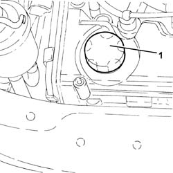
Applies to: engines: 1.9 JTD 8V; all production periods
1. Withdraw the engine oil dipstick.
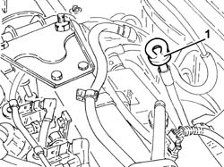
Applies to: engines: 1.9 JTD 8V; all production periods
Proceed with the removal
Op. 7055B54 PROTECTION/GUARD UNDER ENGINE - R.R..
1. Undo the drain plug in the crankcase sump and leave the oil to drain into a suitable container.
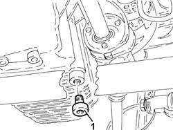
Applies to: engines: 1.9 JTD 8V; all production periods
1. Remove the engine oil filter using a suitable tool.
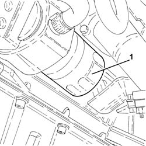
Applies to: engines: 1.9 JTD 8V; all production periods
Clean the drain plug and tighten the gasket to the recommended torque.
Fastening | Component | dia | Value (daNm) | |
|---|---|---|---|---|
- | Plug | ENGINE OIL DRAIN PLUG | M18 | (Crankcase sump side) 1.8 - 2.2 |
Lubricate the new oil filter seal with engine oil and tighten it fully by hand.
Proceed with the refitting
Op. 7055B54 PROTECTION/GUARD UNDER ENGINE - R.R..
Refill the engine lubrication circuit with the recommended oil.
Type | Component | Description | Qty. | |
|---|---|---|---|---|
- | Oil [l] | ENGINE LUBRICATION SYSTEM | SELENIA TURBODIESEL | 4.3 |
For the optimum operation of the engine in particularly harsh climate conditions (temperatures below -15C) use the recommended oil for the engine lubrication circuit.
Type | Component | Description | Qty. | |
|---|---|---|---|---|
- | Oil [l] | ENGINE LUBRICATION SYSTEM | SELENIA WR DIESEL | 4.3 |
Check and, if necessary, top up the engine oil level.
Op. 0010T11 ENGINE OIL - CHECK LEVEL AND TOP UP.
Remove the vehicle from the lift.
Applies to: engines: 1.3 JTD 16V; all production periods
.
Position the vehicle on a lift.
1. Remove the filler cap with the engine hot.
2. Release the engine oil dipstick.
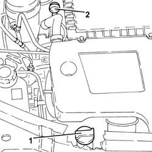
Applies to: engines: 1.3 JTD 16V; all production periods
1. Disconnect the electrical connection from the air flow meter.
Description | Connector | |
|---|---|---|
1 | Air flow meter |
2. Loosen the collar and disconnect the air intake sleeve to the turbocharger, air flow meter side.
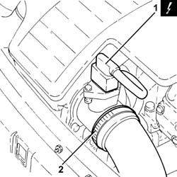
Applies to: engines: 1.3 JTD 16V; all production periods
1. Loosen the band (1a) and disconnect the hose (1b) from the air intake.
2. Remove the air filter (2a) complete with air flow meter (2b) releasing it firstly from the pegs underneath and then from the rear fastening.
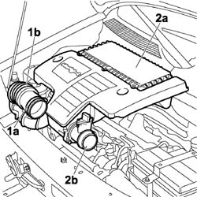
Applies to: engines: 1.3 JTD 16V; all production periods
1. Undo the drain plug in the crankcase sump and leave the oil to drain into a suitable container.
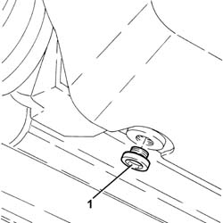
Applies to: engines: 1.3 JTD 16V; all production periods
Undo the three bolts (1) and remove the engine oil filter cartridge heat shield (1b).
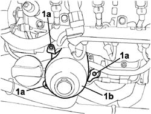
Applies to: engines: 1.3 JTD 16V; all production periods
Undo the bolts and remove the upper protection for the cartridge engine oil filter.
1. Undo the cartridge engine oil filter cover (1a) complete with o-ring (1b) and remove it.
2. Undo and remove the cartridge engine oil filter.
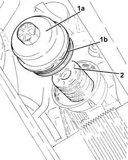
Applies to: engines: 1.3 JTD 16V; all production periods
Clean the drain plug and tighten the gasket to the recommended torque.
Fastening | Component | dia | Value (daNm) | |
|---|---|---|---|---|
- | - | ENGINE OIL DRAIN PLUG | M14 | (Crankcase sump side) 1.8 - 2.2 |
Place a new engine oil filter cartridge in its housing.
Place the cartridge engine oil filter cover complete with new O-rings in its housing and tighten it.
Place the upper protection for the cartridge engine oil filter back in its housing and secure it using the bolts.
Position the oil filter heat shield and tighten the bolts.
Refill the engine lubrication circuit with the recommended oil.
Type | Component | Description | Qty. | |
|---|---|---|---|---|
- | Oil [l] | CHECK ENGINE OIL LEVEL AND TOP UP | SELENIA WR | 3.0 |
Check that the engine oil level is correct using the dipstick.
Refit the air filter with air flow meter in its seat.
Connect the air intake sleeve to the turbocharger, air flow meter side, and tighten the collar.
Connect the electrical connection to the air flow meter.
Fit the filler cap, let the engine idle for about 2 minutes, switch off the engine and then wait for several minutes.
Check the oil level and make sure there are no leaks.
Remove the vehicle from the lift.
Applies to: engines: 1.4 8v; production: da 12/03; only with equipment: MY 2005
Position the vehicle on a lift.
1. Remove the filler cap with the engine hot.
2. Release the engine oil dipstick.
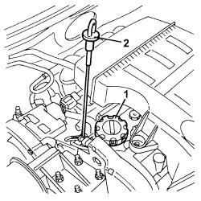
Applies to: engines: 1.4 8v; production: da 12/03; only with equipment: MY 2005
1. Undo the drain plug in the crankcase sump and leave the oil to drain into a suitable container.
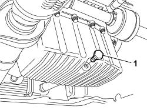
Applies to: engines: 1.4 8v; production: da 12/03; only with equipment: MY 2005
1. Working from underneath the vehicle using the special key unlock the oil filter and remove it.
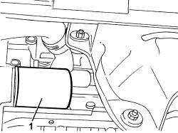
Applies to: engines: 1.4 8v; production: da 12/03; only with equipment: MY 2005
Clean the drain plug and tighten the gasket to the recommended torque.
Fastening | Component | dia | Value (daNm) | |
|---|---|---|---|---|
- | - | ENGINE OIL DRAIN PLUG | - | (crankcase sump side) |
Lubricate the new oil filter seal with engine oil and tighten it fully by hand.
Refill the engine lubrication circuit with the recommended oil.
Type | Component | Description | Qty. | |
|---|---|---|---|---|
- | Oil [l] | ENGINE LUBRICATION SYSTEM | SELENIA 20 K | 2.6 |
For the use of the vehicle in particularly severe climate conditions it is advisable to use the recommended oil for the engine lubrication circuit.
Type | Component | Description | Qty. | |
|---|---|---|---|---|
- | Oil [l] | ENGINE LUBRICATION SYSTEM | SELENIA PERFORMER | 2.6 |
Check that the engine oil level is correct using the dipstick.
Fit the filler cap, let the engine idle for about 2 minutes, switch off the engine and then wait for several minutes.
Check the oil level and make sure there are no leaks.
Remove the vehicle from the lift.
Topics linked from this page (3)
Topics that link to this page (15)
- 0010K20 20,000km service coupon, emission control version
- 0010K40 40,000km service coupon, emission control versions
- 0010K60 60,000km service coupon - emission control versions
- 0010K80 80,000km service coupon - emission control versions
- 0010M01 100,000km service coupon, emission control versions
- 0010M20 120,000km service coupon, emission control versions
- 0010M21 120000 km service coupon for emission control versions with air conditioner
- 0010M40 140,000km service coupon - emission control versions
- 0010M60 160,000km service coupon - emission control versions
- 0010T10 change engine oil
- 1020A20 crank case oil sump - r + r clean seals for sealant application
- 1020A30 engine oil drain plug - replace
- 1020D14 front crank shaft oil seal cover - r + r and replace seals for versions with oil pump on crank shaft, timing side
- 1028H12 SET OF PISTONS WITH CONNECTING RODS - R.R WITH CYLINDER HEAD/S REMOVED
- 1084C20 radiant mass for engine oil cooling - r + r